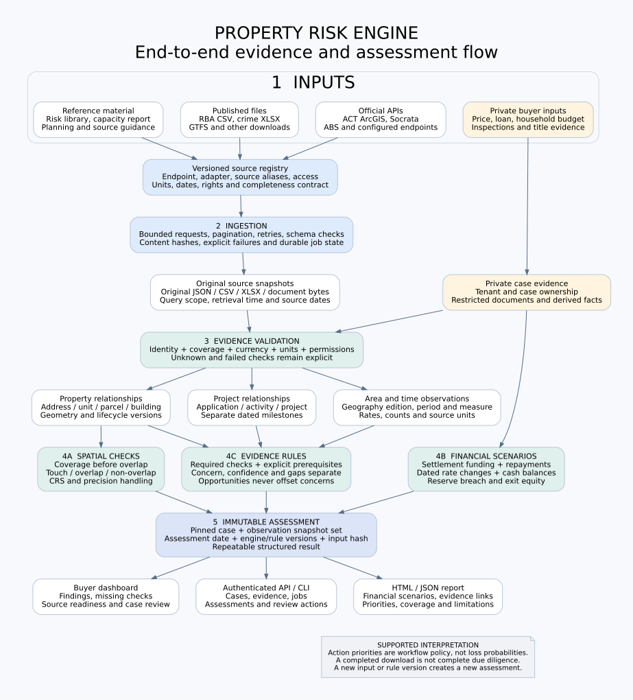
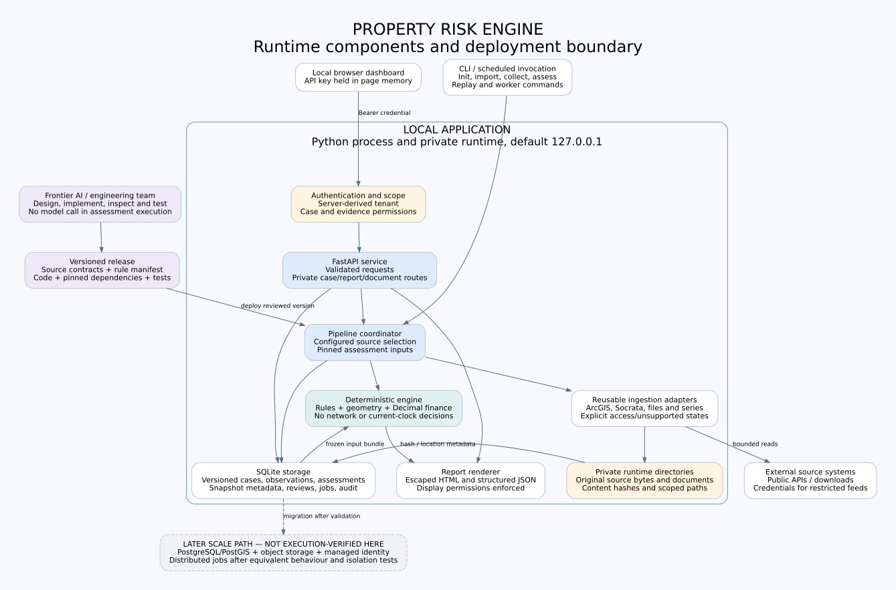
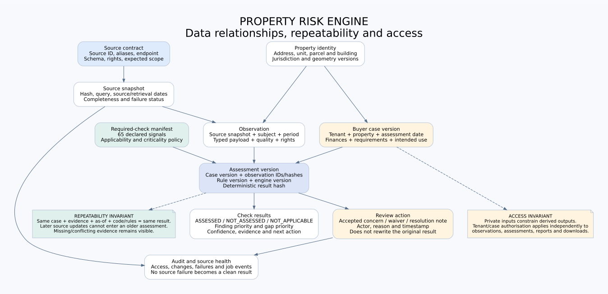

1. End-to-end evidence and assessment flow
Read from top to bottom. Public feeds and private buyer inputs meet at the evidence validation boundary. Numerical checks and structured evidence rules produce an immutable assessment with explicit scope and missingness.

2. Components and deployment
The solid boundary contains the implemented local application. The dashed box is the later cloud scaling architecture. Frontier AI assists engineering; no model is called during deterministic assessment.

3. Evidence relationships, repeatability and access
Every assessment pins case, evidence and rule versions. Public observations are reusable; private evidence and derived outputs retain tenant and case restrictions. Review actions append decisions without rewriting original findings.
